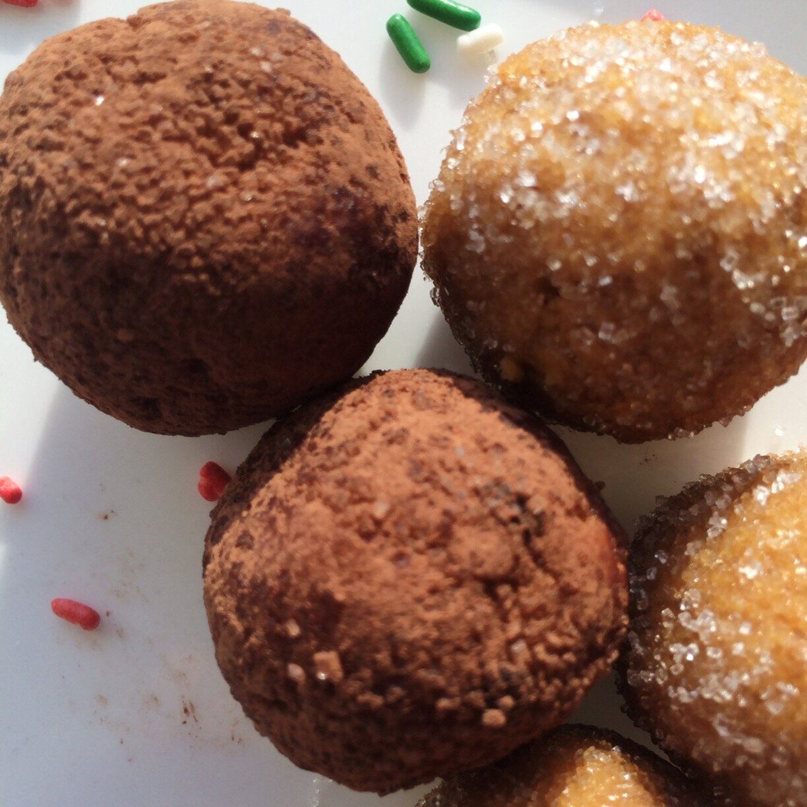
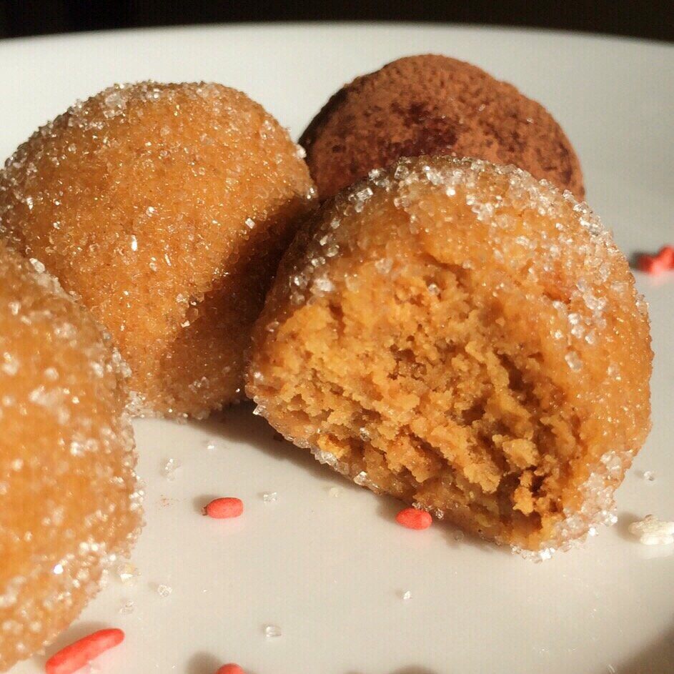
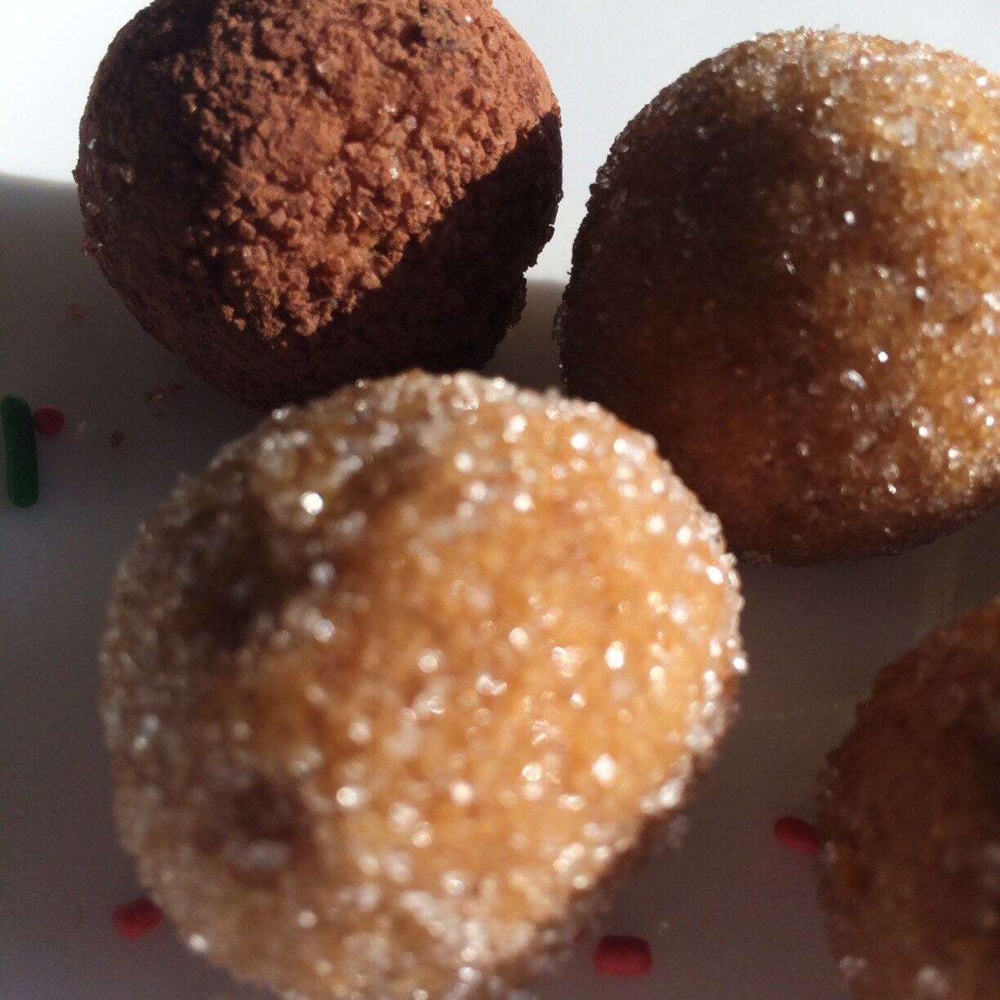

Healthy 2 Ingredient Truffles (vegan)

healthy 2 ingredient truffles, healthy, vegan, truffles,

healthy 2 ingredient truffles, healthy, vegan, truffles,

healthy 2 ingredient truffles, healthy, vegan, truffles,
I got the idea for these healthy 2 ingredient truffles after seeing my friend Shelby make some herself. She used cream cheese, though, and I knew I could find a dairy-free alternative. And I did! SO. DANG. GOOD. I can't believe how such a simple recipe could be so amazing. Takes less than 5 minutes to make, and the truffles are vegan and absolutely irresistible!!Feels like something you should feel guilty about, but no need! :D My addiction to these Lenny & Larry cookies lately could be of some concern. I think the problem is there's so many flavors, I adopted this sort of.. "gotta catch em all!" mentality. So I've been slowly one-by-one trying all the flavors. I think there's just 1 or 2 left for me to try! Hopefully the addiction chills out then, ahaha.
I've been preparing lately for my mom to visit for Christmas! I can't believe it's less than a week away already. I know I just visited her for Thanksgiving, but I'm so excited!! She has never been to Washington so it will all be new for her. :) I'm hoping she brings some heat from Georgia with her. It snowed again here D; but luckily (I'm learning) the snow here melts really fast because it doesn't stay cold for very long around here. Soooo..yay.
I'm going to be making these for her to try when she gets here. Try them out and bring them to friends & family for the holidays! They'll think you're a super fancy chef, promise.
Healthy 2 Ingredient Truffles (vegan, gluten free)
Makes: 10 truffles (serves 2)
-
1 pumpkin spice Lenny & Larry cookie
-
1/4 cup peanut flour (PB2, or any similar brand)
-
1/4 cup water
-
sprinkles, for topping
-
unsweetened cocoa, for topping
-
Mash the cookie into a bowl. It should crumble easily.
-
Add the peanut flour and water. Continue to mash until a thick batter forms. If, after mixing for 3-5 minutes, the batter still doesn't 'bind,' add 1 TBSP more of water.
-
Roll the batter into 10 truffles. Feel free to roll/decorate the truffles with sprinkles or unsweetened cocoa powder.
-
Enjoy!